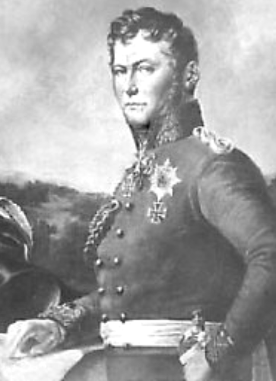
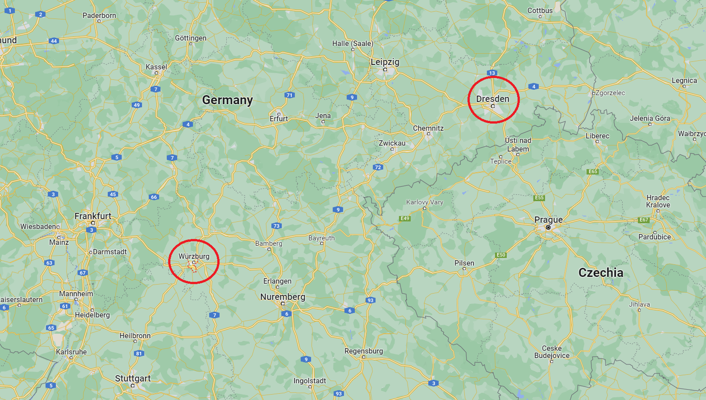
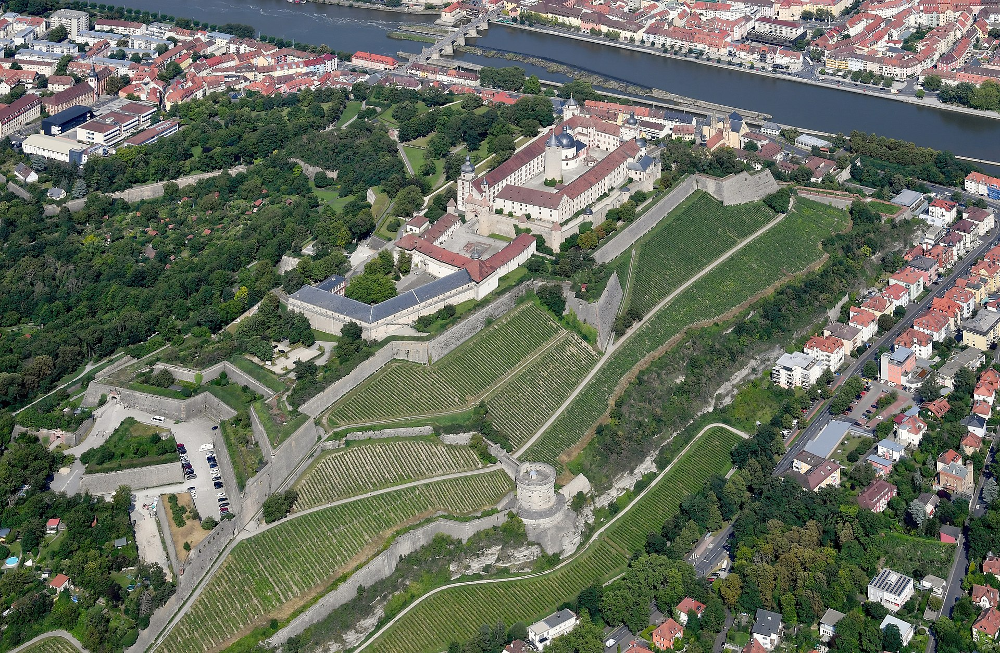
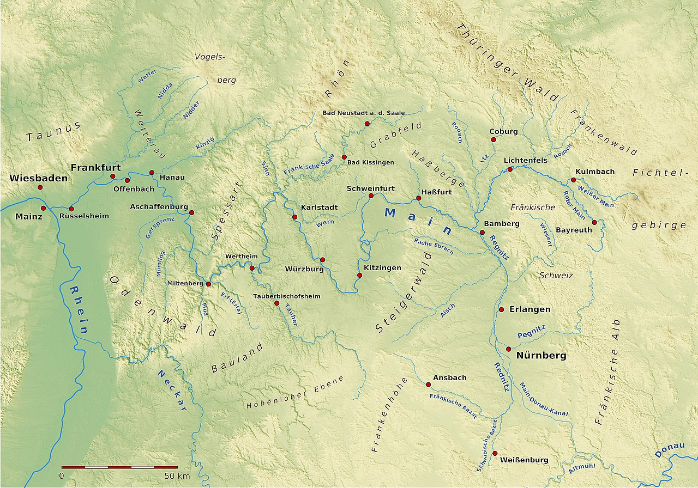
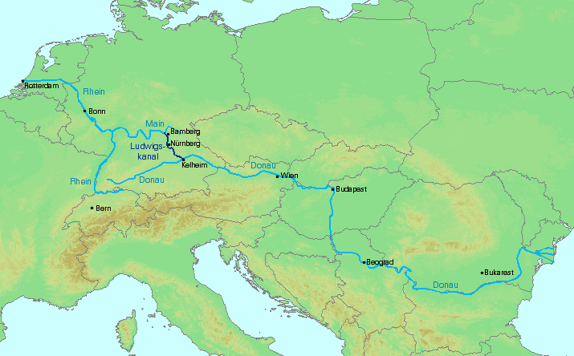

휴전 (13) - 작전이 정치에 휘둘리다
게시: 2023-09-25T06:30:42+09:00
로마노프 왕가는 원래는 러시아 가문이었지만, 점차 독일계 귀족 가문과 결혼을 통해 점점 서구화되었고, 특히 독일 공작 가문 출신으로 짜르에 등극한 표트르 3세 이후로는 사실상 독일계 귀족 가문 출신 인사들이 짜르에 등극했습니다. 남편안 표트르 3세를 쫓아내고 여황이 된 예카테리나 대제도 독일에서 태어난 독일인이었지요. 나폴레옹과 자웅을 겨루던 알렉산드르 1세가 바로 그 부부의 손자였는데, 그의 어머니도 그의 아내도 모두 독일인이었습니다. 그래서인지 알렉산드르는 19세 때 친구에게 자신은 아내와 함께 독일 라인 강변에 정차가여 자연 철학을 공부하며 행복하고 평범하게 사는 것이 꿈이라고 말하기도 했습니다. 확실히 알렉산드르는 독일계 인사들을 좋아하는 편이었습니다. 샤른호스트의 말이라면 뭐든 다 믿고 따른 것도 그였습니다. 꼭 그런 배경이 있기 때문만은 아니겠습니다만, 라데츠키와 톨, 바클레이 등이 작성한 작전계획안 대신 알렉산드르가 채택한 것은 바로 프로이센 국왕의 직속 참모인 크네제벡(Karl Friedrich von dem Knesebeck)이 내놓은 것이었습니다.

(1814년 경의 크네제벡입니다. 그는 나폴레옹보다 1살 많았는데 원래 하급 귀족 출신이었기 때문에 승진은 빠르지 않아서 1813년 당시에도 대령이었습니다. 전투 현장보다는 주로 참모 및 연락장교 등의 후선 업무를 맡았기 떄문에 더더욱 승진이 느렸습니다. 그러나 그는 프로이센의 전쟁 외교에 큰 공을 세웠고 종전 후 왕세자인 프리드리히 빌헬름 4세가 이탈리아 등으로 여행을 떠날 때 그를 수행하며 가까운 친구가 되었기 때문에 이후에는 승진이 빨랐습니다. 그러나 겸손했던 그는 프리드리히 빌헬름 4세가 그의 작위를 Graf(백작)으로 올려주려 하자 사양하고 Freiherr(기사 바로 위, 남작에 해당)의 작위를 그대로 유지했고, 1847년 폴란드 내의 군사 위기 때 그를 원수로 승진시키려 하자 '그건 실제 전쟁에서 전공을 세운 진짜 원수들에 대한 모독'이라면서 사양하기도 했습니다.) 크네제벡 대령의 추산에 따르면 휴전이 종료될 때까지 연합군은 39만, 나폴레옹은 27만을 동원할 수 있었는데, 나폴레옹은 그 중 이미 보유하고 있는 15만을 드레스덴에서 슐레지엔으로 이어지는 지역에 배치할 것이고 나머지 새로 편성하여 충원할 12만은 저 멀리 후방인 뷔르츠부르크(Würzburg) 일대에 배치할 것이라고 보았습니다. 이 뷔르츠부르크는 마인(Main) 강에 인접한 도시로서, 나폴레옹이 러시아 원정에서 돌아와 편성한 마인 방면군의 근거지였기 때문이었습니다. 크네제벡의 작전 계획안이 라데츠키나 바클레이의 것과 다른 점은 2가지였습니다. 하나는 나폴레옹이 어떻게 나올지에 대한 것이었는데, 크네제벡도 나폴레옹은 오스트리아를 먼저 공격할 것이라고 예측했지만, 특이하게도 보헤미이가 아니라 도나우 강을 따라 오스트리아 본토를 습격하여 수도 빈을 노릴 것이라고 보았습니다. 크네제벡이 보기에, 어차피 프랑스에서 새로 편성될 부대는 뷔르츠부르크 쪽에 먼저 집결할 수밖에 없는데, 그 위치에서는 도나우 계곡을 따라 이동하는 것이 합리적이라는 것이었습니다. 드레스덴과 슐레지엔 일대의 15만 병력으로는 일부는 슐레지엔을 견제하면서 나머지로는 역시 보헤미아를 공격할 것이라고 보았습니다.

(뷔르츠부르크는 지금의 바이에른에 있는 도시로서, 마인 강을 낀 도시입니다. 원래 이런저런 신성로마제국 선제후들의 지배를 받다가 1803년에는 잠깐 바이에른에게 통치권이 넘어갔다가 1813년 당시엔 뷔르츠부르크 공작령으로 독립한 상태였습니다. 나폴레옹 몰락 이후에는 도중에 나폴레옹을 배시한 바이에른에게 포상조로 넘겨졌습니다. 지금은 인구 12만 정도의 소도시입니다.)

(뷔르츠부르크는 마인 강을 접하고 있는 것 외에도 마리엔베르크(Marienberg) 요새를 끼고 있는 도시라는 점에서 군사적 요충지였습니다. 그림은 17세기 중반의 모습을 그린 것입니다.)

(마리엔베르크 요새의 요즘 모습입니다. 관광지로서의 독일의 특징은 이렇게 지방 곳곳에 명소들이 많기는 한데 넓은 독일 지방 곳곳에 드문드문 펼쳐져 있어서 시간에 쫓기는 한국 관광객들이 몰아서 보기에는 부적절하다는 점에 있다고 합니다.)

(마인 강의 지도입니다. 마인 강 자체는 서쪽으로 흘러가 라인 강과 합류하는 라인 강의 지류라고 할 수 있습니다. 마인 강의 진짜 중요서은 그 상류 지역이 도나우 강과 매우 근접해 있어서, 마인 강 계곡과 도나우 강 계곡은 하나로 연결될 수 있다는 점입니다. 지도 오른쪽 아래를 자세히 보시면 마인-도나우 운하가 있는 것을 보실 수 있습니다.)

(마인-도나우 운하는 1939년 최초로 시작되었다가 WW2 때문에 중단되었고, 1960년대에 다시 건설이 시작되어 1992년에야 완공되었습니다. 이를 통해 라인 강 하구 네덜란드에서 하역된 화물이 오스트리아 빈까지 운송될 수 있습니다. 마찬가지로, 마인 강변에 집결한 나폴레옹군은 저 경로를 따라 쉽게 빈을 침공할 수 있었습니다.) 크네제벡의 작전안이 남달랐던 점 두 번째는 남북으로의 협공이었습니다. 바클레이나 라데츠키는 모두 슐레지엔의 러시아-프로이센 연합군과 보헤미아의 오스트리아군만을 셈에 넣고 있어서, 그 두 군대가 나폴레옹을 동서로 협공하자는 것이 핵심이었습니다. 그러나 크네제벡은 북쪽 베를린을 지키고 있던 뷜로의 프로이센군에 원래 연합군에 참전하기로 했던 스웨덴군을 합류시켜 북부군을 편성하고, 이들을 남하시켜 드레스덴을 위협해야 한다고 주장했습니다. 그리고 슐레지엔의 러시아-프로이센 연합군 중 일부를 보헤미아에 보내 보내 오스트리아를 지켜줄 것이 아니라, 아예 전체 연합군을 모두 보헤미아로 보내 북부의 프로이센-스웨덴 연합군과 함께 남북으로 나폴레옹을 협공하자는 것이었습니다. 짜르가 크네제벡의 안을 택한 것은 실은 프리드리히 빌헬름에 대한 배려 때문이었습니다. 먼저, 짜르는 못난 동맹이라고 해도 국왕인 프리드리히 빌헬름의 의견을 무시할 수는 없었으므로 그가 내놓는 의견은 어지간하면 들어주려 했습니다. 프리드리히 빌헬름은 프로이센의 수도인 베를린을 무방비로 두는 것이 못마땅했고, 그래서 북쪽에도 강력한 부대를 두어야 한다고 생각했습니다. 그런데 그렇게 북쪽에 증원군을 보내 베를린을 지켜달라고 하기에는 명분이 부족했습니다. 하지만 스웨덴이 참전한다면 이야기가 좀 달라졌습니다. 프리드리히 빌헬름은 춘계 작전 때 베르나도트의 스웨덴군이 아무 역할을 하지 않은 것은 그의 불성실이나 배신 때문이 아니라 1812년 러시아-스웨덴 간에 맺어진 앙보(Åbo) 조약에서 약속된 러시아 지원군이 제공되지 않았기 때문이라고 생각했습니다. 그래서, 프리드리히 빌헬름은 러시아군 일부를 북부로 보내 스웨덴군과 합류시키고, 베를린 일대의 뷜로 휘하 프로이센군까지 모두 베르나도트 휘하에 두게 하면 베르나도트도 적극적으로 참전할 것이고, 그러면 베를린이 안전해질 것이라고 생각했던 것입니다. 그러나 이 안을 낸 프로이센인들은 자신들이 낸 작전안대로 병력을 재편하면 프로이센의 운명이 오스트리아와 스웨덴의 손아귀에 들어가게 된다는 것을 뒤늦게 깨달았습니다. 남부에서 전체 연합군이 다 보헤미아로 들어가게 되면 아무래도 남부군의 총사령관직은 오스트리아가 맡게 될 수 밖에 없는데, 그런 상황에서 북부군의 사령관까지 베르나도트에게 맡기는 것은 프로이센에게는 정치적으로 너무 위험한 상황이 되는 것이었습니다. 결국 이건 아니다 싶었던 프로이센은 크네제벡의 안을 약간 수정하여 보헤미아로 보내기로 한 병력 중 1/3은 프로이센군 지휘관 하에 슐레지엔에 남겨두기로 하고, 그 명분은 '러시아군의 후방 교통로를 지키는 것'으로 했습니다. 결국 나폴레옹이라는 거물을 상대할 작전안은 여러 연합국 사이에서 서로의 입장과 이익을 고려하고 절충하여 만들어진 매우 정치적인 것이 되고 말았습니다. 이렇게 연합군의 하계 작전을 위한 대략적인 그림이 그려지게 되었는데, 이걸 유럽 축구 시즌으로 비교하자면 단장들이 선수단 재편을 위한 큰 그림을 짠 정도라고 할 수 있었습니다. 단장이 그릴 수 있는 그림은 실제 작전을 지휘할 감독이 그려야 할 전술안과는 다를 수 밖에 없었는데, 그 구체적인 전술안을 그리자면 무엇보다 감독 영업이 먼저 이루어져야 했습니다. 갑자기 연합군을 승리로 이끌 주요 인물이 되어버린 베르나도트로 이제 시선을 옮겨 보시겠습니다. Source : The Life of Napoleon Bonaparte, by William Milligan Sloane Napoleon and the Struggle for Germany, by Leggiere, Michael V https://en.wikipedia.org/wiki/Peter_III_of_Russia https://en.wikipedia.org/wiki/Karl_Friedrich_von_dem_Knesebeck https://en.wikipedia.org/wiki/W%C3%BCrzburg https://en.wikipedia.org/wiki/Marienberg_Fortress https://en.wikipedia.org/wiki/Rhine%E2%80%93Main%E2%80%93Danube_Canal